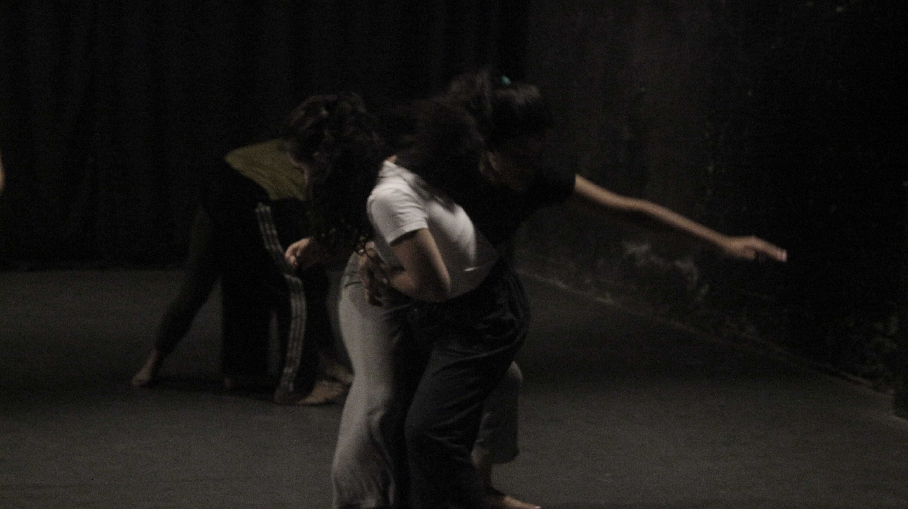
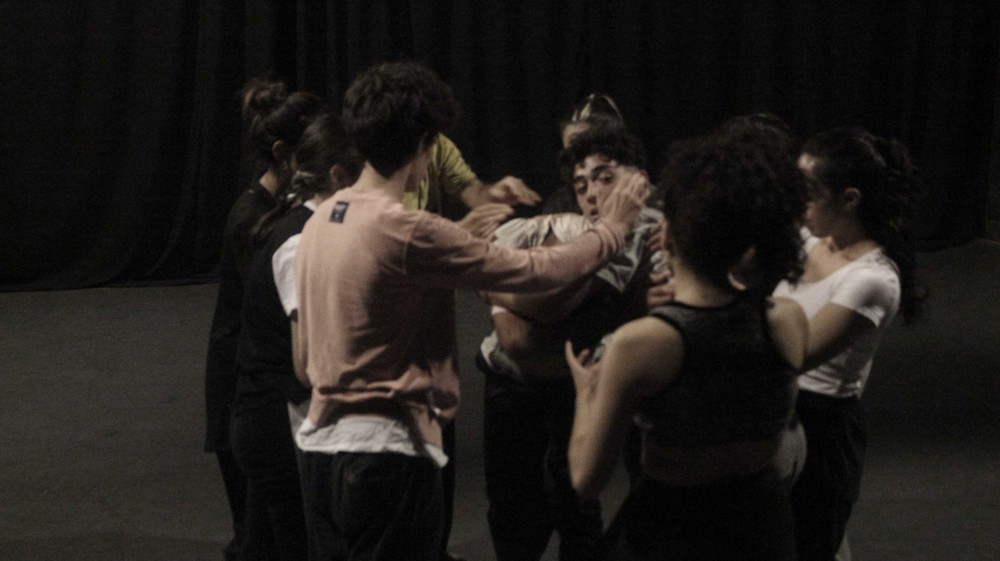
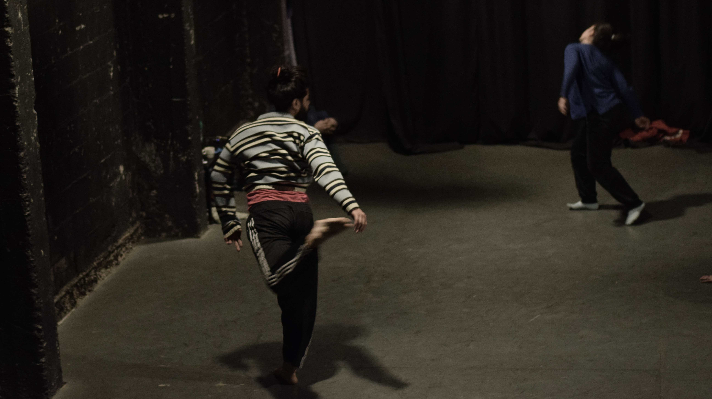
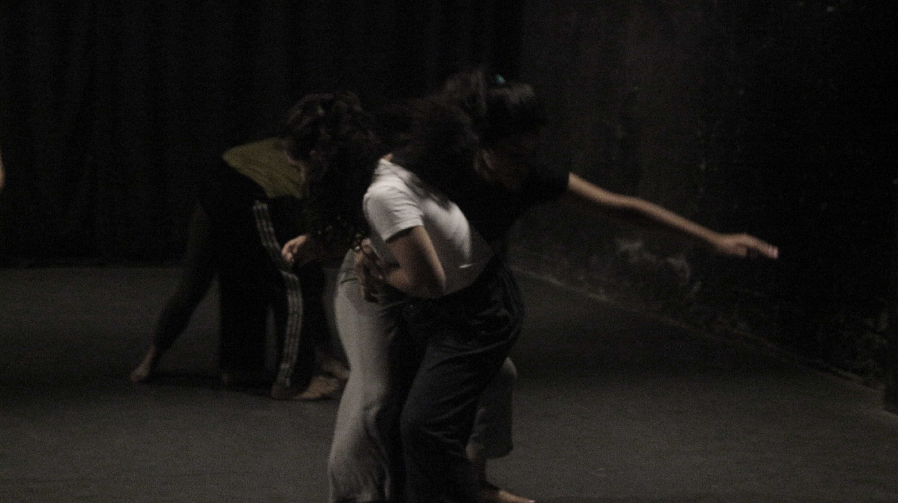
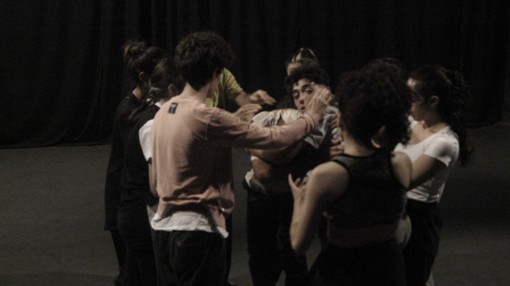
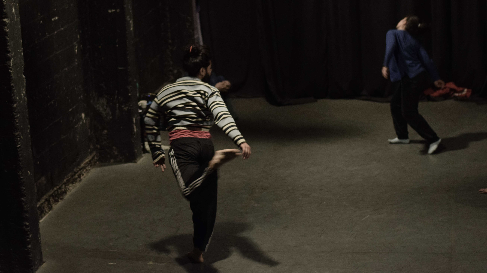
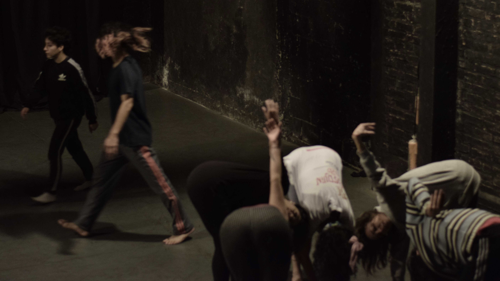
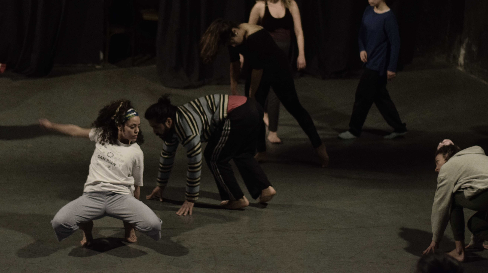
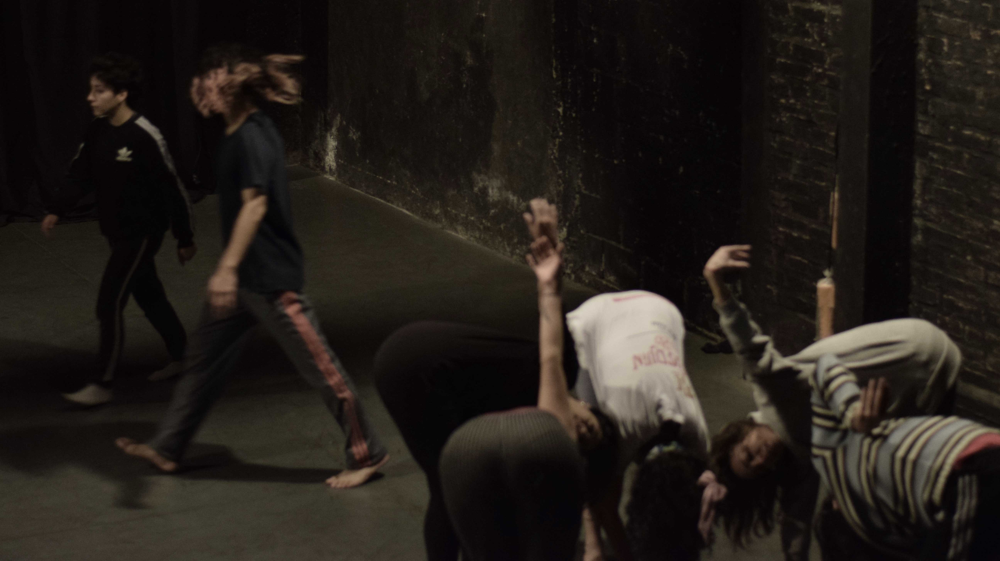
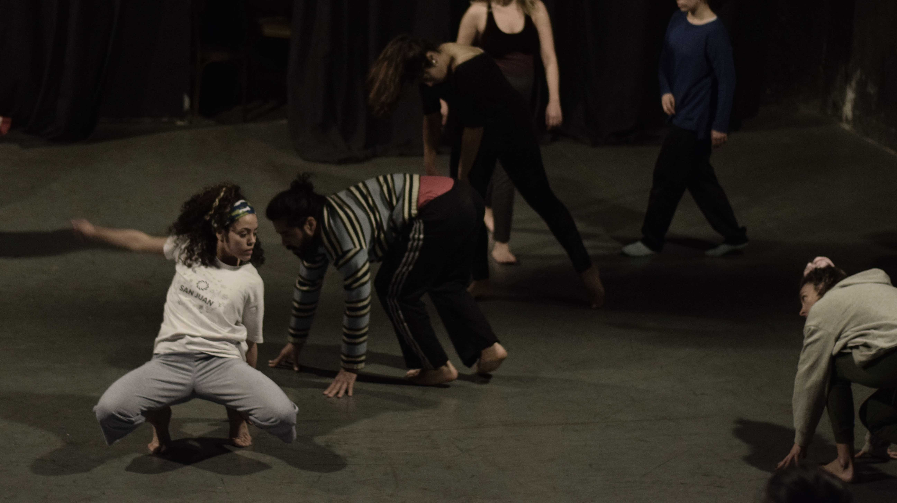

 



El taller se dicta de forma anual, con encuentros dos veces a la semana. Además, se podrá participar, a libertad de quien asiste, a distintos eventos de danza, como por ejemplo los Encuentros en el Nido.
A quien está dirigido
El taller está dirigido a cualquier persona que esté interesada en el movimiento, lograr una mayor conexión con el cuerpo y su gestualidad